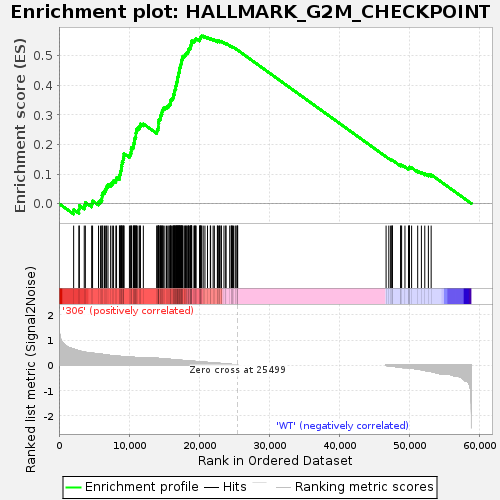
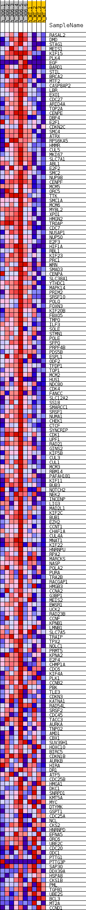
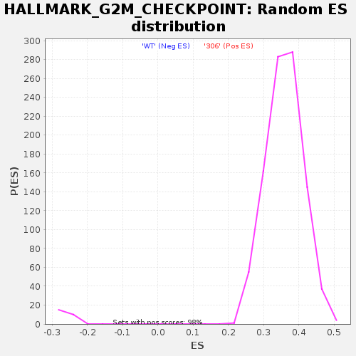

| | | Dataset | 306_WT_express.306_WT.cls#306_versus_WT |
| Phenotype | 306_WT.cls#306_versus_WT |
| Upregulated in class | 306 |
| GeneSet | HALLMARK_G2M_CHECKPOINT |
| Enrichment Score (ES) | 0.56739104 |
| Normalized Enrichment Score (NES) | 1.5790694 |
| Nominal p-value | 0.0 |
| FDR q-value | 0.010091359 |
| FWER p-Value | 0.02 |
Table: GSEA Results Summary

Fig 1: Enrichment plot: HALLMARK_G2M_CHECKPOINT
Profile of the Running ES Score & Positions of GeneSet Members on the Rank Ordered List
| SYMBOL | TITLE | RANK IN GENE LIST | RANK METRIC SCORE | RUNNING ES | CORE ENRICHMENT | | 1 | RASAL2 | NNN | 2089 | 0.639 | -0.0202 | Yes |
| 2 | DMD | NNN | 2838 | 0.571 | -0.0192 | Yes |
| 3 | STAG1 | NNN | 2899 | 0.566 | -0.0066 | Yes |
| 4 | MEIS1 | NNN | 3602 | 0.524 | -0.0059 | Yes |
| 5 | KIF15 | NNN | 3758 | 0.513 | 0.0038 | Yes |
| 6 | PLK4 | NNN | 4661 | 0.478 | -0.0000 | Yes |
| 7 | EGF | NNN | 4788 | 0.472 | 0.0092 | Yes |
| 8 | BARD1 | NNN | 5636 | 0.457 | 0.0058 | Yes |
| 9 | STIL | NNN | 5913 | 0.443 | 0.0118 | Yes |
| 10 | BRCA2 | NNN | 6121 | 0.433 | 0.0187 | Yes |
| 11 | MTF2 | NNN | 6134 | 0.433 | 0.0290 | Yes |
| 12 | CASP8AP2 | NNN | 6250 | 0.428 | 0.0373 | Yes |
| 13 | LBR | NNN | 6490 | 0.418 | 0.0433 | Yes |
| 14 | EXO1 | NNN | 6664 | 0.411 | 0.0503 | Yes |
| 15 | CDC27 | NNN | 6792 | 0.406 | 0.0579 | Yes |
| 16 | ARID4A | NNN | 6990 | 0.397 | 0.0642 | Yes |
| 17 | TOP2A | NNN | 7365 | 0.382 | 0.0670 | Yes |
| 18 | CENPE | NNN | 7599 | 0.374 | 0.0721 | Yes |
| 19 | DBF4 | NNN | 7783 | 0.369 | 0.0778 | Yes |
| 20 | E2F1 | NNN | 8112 | 0.360 | 0.0809 | Yes |
| 21 | CDKN2C | NNN | 8209 | 0.358 | 0.0879 | Yes |
| 22 | SMC4 | NNN | 8619 | 0.351 | 0.0894 | Yes |
| 23 | ATRX | NNN | 8637 | 0.350 | 0.0976 | Yes |
| 24 | RPS6KA5 | NNN | 8752 | 0.348 | 0.1040 | Yes |
| 25 | HMMR | NNN | 8805 | 0.346 | 0.1115 | Yes |
| 26 | CUL5 | NNN | 8882 | 0.344 | 0.1185 | Yes |
| 27 | MKI67 | NNN | 8912 | 0.343 | 0.1263 | Yes |
| 28 | SLC7A1 | NNN | 8976 | 0.341 | 0.1334 | Yes |
| 29 | ABL1 | NNN | 9006 | 0.340 | 0.1411 | Yes |
| 30 | E2F2 | NNN | 9132 | 0.336 | 0.1471 | Yes |
| 31 | SMC2 | NNN | 9167 | 0.335 | 0.1546 | Yes |
| 32 | NUP98 | NNN | 9251 | 0.332 | 0.1612 | Yes |
| 33 | CENPF | NNN | 9262 | 0.332 | 0.1690 | Yes |
| 34 | MCM5 | NNN | 10046 | 0.327 | 0.1635 | Yes |
| 35 | ORC5 | NNN | 10171 | 0.323 | 0.1692 | Yes |
| 36 | TTK | NNN | 10275 | 0.320 | 0.1752 | Yes |
| 37 | SMC1A | NNN | 10296 | 0.320 | 0.1826 | Yes |
| 38 | MCM6 | NNN | 10326 | 0.319 | 0.1898 | Yes |
| 39 | MYBL2 | NNN | 10583 | 0.315 | 0.1930 | Yes |
| 40 | XPO1 | NNN | 10630 | 0.313 | 0.1998 | Yes |
| 41 | HMGN2 | NNN | 10703 | 0.311 | 0.2060 | Yes |
| 42 | TROAP | NNN | 10752 | 0.310 | 0.2127 | Yes |
| 43 | CDC7 | NNN | 10763 | 0.309 | 0.2200 | Yes |
| 44 | NUSAP1 | NNN | 10882 | 0.306 | 0.2253 | Yes |
| 45 | NUP50 | NNN | 10962 | 0.304 | 0.2313 | Yes |
| 46 | E2F3 | NNN | 10963 | 0.304 | 0.2386 | Yes |
| 47 | HIF1A | NNN | 11034 | 0.302 | 0.2447 | Yes |
| 48 | RBL1 | NNN | 11047 | 0.302 | 0.2518 | Yes |
| 49 | KIF23 | NNN | 11237 | 0.297 | 0.2557 | Yes |
| 50 | PRC1 | NNN | 11461 | 0.290 | 0.2589 | Yes |
| 51 | WRN | NNN | 11557 | 0.287 | 0.2642 | Yes |
| 52 | SMAD3 | NNN | 11619 | 0.285 | 0.2701 | Yes |
| 53 | CENPA | NNN | 12032 | 0.275 | 0.2697 | Yes |
| 54 | SLC38A1 | NNN | 13940 | 0.274 | 0.2438 | Yes |
| 55 | YTHDC1 | NNN | 14003 | 0.272 | 0.2493 | Yes |
| 56 | MAPK14 | NNN | 14122 | 0.271 | 0.2538 | Yes |
| 57 | PRIM2 | NNN | 14164 | 0.269 | 0.2596 | Yes |
| 58 | SRSF10 | NNN | 14186 | 0.269 | 0.2657 | Yes |
| 59 | POLQ | NNN | 14187 | 0.269 | 0.2722 | Yes |
| 60 | FOXN3 | NNN | 14243 | 0.267 | 0.2777 | Yes |
| 61 | KIF20B | NNN | 14258 | 0.267 | 0.2839 | Yes |
| 62 | FBXO5 | NNN | 14410 | 0.263 | 0.2877 | Yes |
| 63 | TMPO | NNN | 14481 | 0.261 | 0.2928 | Yes |
| 64 | ILF3 | NNN | 14500 | 0.261 | 0.2988 | Yes |
| 65 | SQLE | NNN | 14633 | 0.257 | 0.3027 | Yes |
| 66 | STMN1 | NNN | 14686 | 0.256 | 0.3080 | Yes |
| 67 | POLE | NNN | 14712 | 0.255 | 0.3138 | Yes |
| 68 | SFPQ | NNN | 14808 | 0.253 | 0.3182 | Yes |
| 69 | PRPF4B | NNN | 14876 | 0.251 | 0.3232 | Yes |
| 70 | PDS5B | NNN | 15099 | 0.246 | 0.3253 | Yes |
| 71 | ESPL1 | NNN | 15336 | 0.242 | 0.3271 | Yes |
| 72 | ODF2 | NNN | 15520 | 0.238 | 0.3297 | Yes |
| 73 | TFDP1 | NNN | 15673 | 0.235 | 0.3328 | Yes |
| 74 | TOP1 | NNN | 15791 | 0.232 | 0.3364 | Yes |
| 75 | MCM2 | NNN | 15910 | 0.228 | 0.3399 | Yes |
| 76 | HUS1 | NNN | 15914 | 0.228 | 0.3454 | Yes |
| 77 | NDC80 | NNN | 15940 | 0.228 | 0.3504 | Yes |
| 78 | CDK4 | NNN | 16068 | 0.225 | 0.3537 | Yes |
| 79 | FANCC | NNN | 16229 | 0.221 | 0.3563 | Yes |
| 80 | SLC12A2 | NNN | 16300 | 0.219 | 0.3604 | Yes |
| 81 | SS18 | NNN | 16321 | 0.219 | 0.3653 | Yes |
| 82 | SMARCC1 | NNN | 16327 | 0.218 | 0.3705 | Yes |
| 83 | SRSF1 | NNN | 16471 | 0.215 | 0.3732 | Yes |
| 84 | NUMA1 | NNN | 16472 | 0.215 | 0.3784 | Yes |
| 85 | CHEK1 | NNN | 16500 | 0.214 | 0.3831 | Yes |
| 86 | CTCF | NNN | 16574 | 0.213 | 0.3870 | Yes |
| 87 | SYNCRIP | NNN | 16667 | 0.210 | 0.3905 | Yes |
| 88 | CDK1 | NNN | 16670 | 0.210 | 0.3956 | Yes |
| 89 | UPF1 | NNN | 16693 | 0.210 | 0.4003 | Yes |
| 90 | RAD21 | NNN | 16757 | 0.208 | 0.4042 | Yes |
| 91 | GINS2 | NNN | 16796 | 0.207 | 0.4086 | Yes |
| 92 | KIF5B | NNN | 16836 | 0.206 | 0.4129 | Yes |
| 93 | CUL3 | NNN | 16868 | 0.205 | 0.4173 | Yes |
| 94 | CUL1 | NNN | 16879 | 0.205 | 0.4221 | Yes |
| 95 | MCM3 | NNN | 16942 | 0.203 | 0.4259 | Yes |
| 96 | RBM14 | NNN | 16956 | 0.203 | 0.4306 | Yes |
| 97 | PAFAH1B1 | NNN | 17050 | 0.201 | 0.4338 | Yes |
| 98 | KIF11 | NNN | 17060 | 0.200 | 0.4385 | Yes |
| 99 | BUB3 | NNN | 17061 | 0.200 | 0.4434 | Yes |
| 100 | NOTCH2 | NNN | 17170 | 0.197 | 0.4463 | Yes |
| 101 | NEK2 | NNN | 17178 | 0.197 | 0.4509 | Yes |
| 102 | INCENP | NNN | 17182 | 0.197 | 0.4556 | Yes |
| 103 | LIG3 | NNN | 17203 | 0.197 | 0.4600 | Yes |
| 104 | MAD2L1 | NNN | 17299 | 0.195 | 0.4631 | Yes |
| 105 | KIF2C | NNN | 17332 | 0.194 | 0.4673 | Yes |
| 106 | BUB1 | NNN | 17379 | 0.194 | 0.4711 | Yes |
| 107 | EZH2 | NNN | 17430 | 0.192 | 0.4749 | Yes |
| 108 | CCNT1 | NNN | 17447 | 0.192 | 0.4793 | Yes |
| 109 | CHAF1A | NNN | 17472 | 0.191 | 0.4835 | Yes |
| 110 | CUL4A | NNN | 17502 | 0.191 | 0.4876 | Yes |
| 111 | MNAT1 | NNN | 17631 | 0.187 | 0.4899 | Yes |
| 112 | KIF22 | NNN | 17642 | 0.187 | 0.4943 | Yes |
| 113 | HNRNPU | NNN | 17649 | 0.187 | 0.4987 | Yes |
| 114 | RPA2 | NNN | 17862 | 0.187 | 0.4996 | Yes |
| 115 | MARCKS | NNN | 17968 | 0.184 | 0.5022 | Yes |
| 116 | NASP | NNN | 18043 | 0.182 | 0.5053 | Yes |
| 117 | POLA2 | NNN | 18149 | 0.179 | 0.5079 | Yes |
| 118 | PURA | NNN | 18228 | 0.177 | 0.5108 | Yes |
| 119 | TRA2B | NNN | 18374 | 0.174 | 0.5125 | Yes |
| 120 | RACGAP1 | NNN | 18446 | 0.172 | 0.5155 | Yes |
| 121 | HMGB3 | NNN | 18475 | 0.171 | 0.5191 | Yes |
| 122 | CCNA2 | NNN | 18496 | 0.171 | 0.5229 | Yes |
| 123 | G3BP1 | NNN | 18641 | 0.167 | 0.5245 | Yes |
| 124 | MEIS2 | NNN | 18753 | 0.165 | 0.5266 | Yes |
| 125 | EWSR1 | NNN | 18761 | 0.165 | 0.5304 | Yes |
| 126 | UCK2 | NNN | 18813 | 0.163 | 0.5335 | Yes |
| 127 | RAD23B | NNN | 18824 | 0.163 | 0.5373 | Yes |
| 128 | CCNF | NNN | 18886 | 0.162 | 0.5401 | Yes |
| 129 | KPNB1 | NNN | 18903 | 0.161 | 0.5437 | Yes |
| 130 | LMNB1 | NNN | 18917 | 0.161 | 0.5474 | Yes |
| 131 | SLC7A5 | NNN | 18931 | 0.161 | 0.5510 | Yes |
| 132 | TRAIP | NNN | 19249 | 0.153 | 0.5493 | Yes |
| 133 | TPX2 | NNN | 19332 | 0.152 | 0.5516 | Yes |
| 134 | NOLC1 | NNN | 19408 | 0.150 | 0.5539 | Yes |
| 135 | PRMT5 | NNN | 19484 | 0.148 | 0.5562 | Yes |
| 136 | KPNA2 | NNN | 19559 | 0.146 | 0.5585 | Yes |
| 137 | E2F4 | NNN | 20053 | 0.136 | 0.5534 | Yes |
| 138 | CHMP1A | NNN | 20075 | 0.135 | 0.5563 | Yes |
| 139 | CDC6 | NNN | 20132 | 0.134 | 0.5586 | Yes |
| 140 | KIF4A | NNN | 20206 | 0.132 | 0.5605 | Yes |
| 141 | PLK1 | NNN | 20226 | 0.131 | 0.5633 | Yes |
| 142 | CCNB2 | NNN | 20259 | 0.130 | 0.5659 | Yes |
| 143 | PBK | NNN | 20355 | 0.128 | 0.5674 | Yes |
| 144 | TLE3 | NNN | 20567 | 0.123 | 0.5668 | No |
| 145 | CDKN3 | NNN | 20819 | 0.117 | 0.5653 | No |
| 146 | KATNA1 | NNN | 21185 | 0.109 | 0.5617 | No |
| 147 | RAD54L | NNN | 21587 | 0.099 | 0.5573 | No |
| 148 | SRSF2 | NNN | 21627 | 0.098 | 0.5589 | No |
| 149 | CDC45 | NNN | 21986 | 0.090 | 0.5550 | No |
| 150 | TACC3 | NNN | 22160 | 0.085 | 0.5541 | No |
| 151 | AURKA | NNN | 22595 | 0.079 | 0.5486 | No |
| 152 | TNPO2 | NNN | 22607 | 0.079 | 0.5503 | No |
| 153 | AMD1 | NNN | 22732 | 0.076 | 0.5500 | No |
| 154 | CBX1 | NNN | 22909 | 0.072 | 0.5488 | No |
| 155 | SUV39H1 | NNN | 22925 | 0.072 | 0.5502 | No |
| 156 | HOXC10 | NNN | 23119 | 0.066 | 0.5486 | No |
| 157 | BIRC5 | NNN | 23166 | 0.065 | 0.5493 | No |
| 158 | CDKN1B | NNN | 23535 | 0.061 | 0.5445 | No |
| 159 | AURKB | NNN | 23794 | 0.053 | 0.5414 | No |
| 160 | HIRA | NNN | 23819 | 0.052 | 0.5423 | No |
| 161 | DR1 | NNN | 24355 | 0.037 | 0.5340 | No |
| 162 | ATF5 | NNN | 24560 | 0.033 | 0.5314 | No |
| 163 | CDC25B | NNN | 24608 | 0.031 | 0.5313 | No |
| 164 | HMGA1 | NNN | 24695 | 0.029 | 0.5305 | No |
| 165 | DKC1 | NNN | 24762 | 0.027 | 0.5301 | No |
| 166 | SNRPD1 | NNN | 24886 | 0.024 | 0.5285 | No |
| 167 | KMT5A | NNN | 25127 | 0.016 | 0.5248 | No |
| 168 | MYC | NNN | 25253 | 0.012 | 0.5230 | No |
| 169 | DTYMK | NNN | 25420 | 0.005 | 0.5203 | No |
| 170 | GSPT1 | NNN | 25451 | 0.003 | 0.5198 | No |
| 171 | CDC25A | NNN | 25491 | 0.001 | 0.5192 | No |
| 172 | NCL | NNN | 46661 | -0.004 | 0.1583 | No |
| 173 | CKS2 | NNN | 47050 | -0.021 | 0.1522 | No |
| 174 | HNRNPD | NNN | 47311 | -0.030 | 0.1484 | No |
| 175 | EFNA5 | NNN | 47476 | -0.035 | 0.1465 | No |
| 176 | ORC6 | NNN | 47530 | -0.036 | 0.1465 | No |
| 177 | UBE2C | NNN | 47561 | -0.037 | 0.1468 | No |
| 178 | CDC20 | NNN | 48744 | -0.080 | 0.1286 | No |
| 179 | ODC1 | NNN | 48759 | -0.081 | 0.1303 | No |
| 180 | PTTG1 | NNN | 48876 | -0.086 | 0.1304 | No |
| 181 | PTTG3P | NNN | 49353 | -0.092 | 0.1245 | No |
| 182 | SAP30 | NNN | 49863 | -0.100 | 0.1182 | No |
| 183 | DDX39A | NNN | 49906 | -0.102 | 0.1200 | No |
| 184 | HSPA8 | NNN | 49994 | -0.105 | 0.1210 | No |
| 185 | CKS1B | NNN | 50001 | -0.106 | 0.1235 | No |
| 186 | PML | NNN | 50301 | -0.114 | 0.1211 | No |
| 187 | TGFB1 | NNN | 51169 | -0.152 | 0.1100 | No |
| 188 | UBE2S | NNN | 51699 | -0.174 | 0.1052 | No |
| 189 | BCL3 | NNN | 52181 | -0.202 | 0.1019 | No |
| 190 | MT2A | NNN | 52695 | -0.234 | 0.0988 | No |
| 191 | CCND1 | NNN | 53091 | -0.241 | 0.0979 | No |
Table: GSEA details [plain text format]

Fig 2: HALLMARK_G2M_CHECKPOINT
Blue-Pink O' Gram in the Space of the Analyzed GeneSet

Fig 3: HALLMARK_G2M_CHECKPOINT: Random ES distribution
Gene set null distribution of ES for HALLMARK_G2M_CHECKPOINT